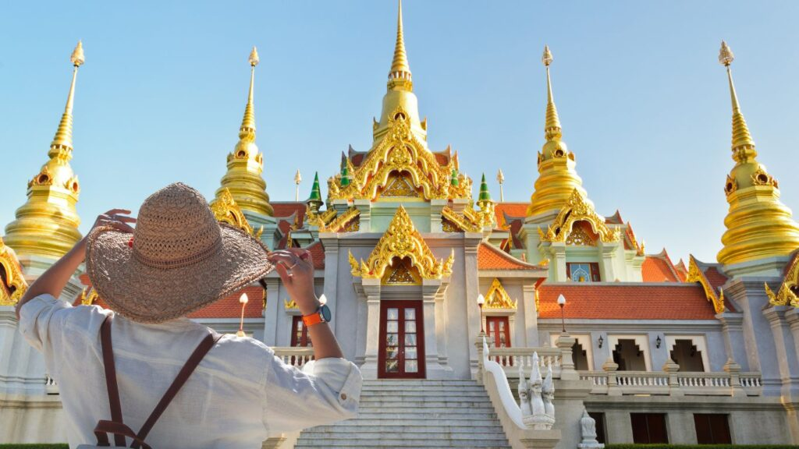
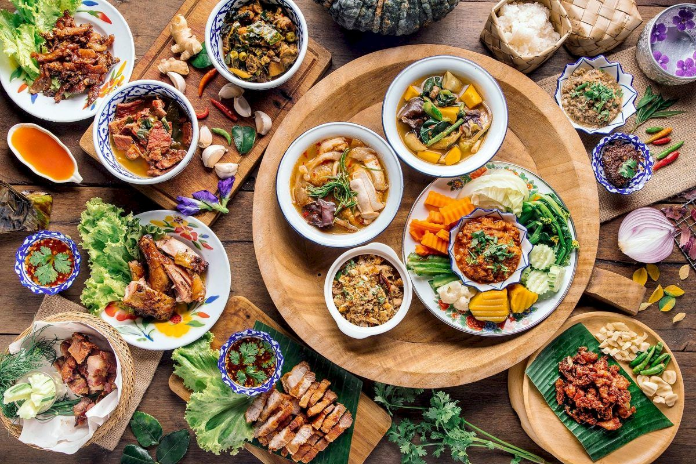

La cultura de Tailandia es uno de los aspectos más fascinantes de hacer un viaje a Tailandia. Ubicado en el corazón del Sudeste Asiático, este país cautiva con sus tradiciones ancestrales, su profunda espiritualidad y su hospitalidad legendaria.
Aunque algunos aspectos de la vida tailandesa pueden generar choques culturales, la mayoría de los extranjeros encuentran una acogida amistosa y cálida, y por algo es que se ganó su apodo como "el país de las sonrisas".
Desde las danzas tradicionales y los elaborados festivales hasta la vida cotidiana en los mercados y templos, cada experiencia ofrece una ventana a una cultura milenaria. Sumergirse en estas costumbres permite no solo entender mejor la esencia del pueblo tailandés, sino también disfrutar de una perspectiva más profunda y enriquecedora del viaje.
Así que, prepárate para descubrir la maravillosa cultura de Tailandia y dejarte sorprender por un país que equilibra a la perfección lo antiguo y lo moderno.
¿Qué encontrarás aquí?
- Costumbres y tradiciones de TailandiaCostumbres y tradiciones de Tailandia
- El "wai": un saludo lleno de significado
- Festivales vibrantes: una explosión de color y alegría
- Espíritus y números: aspecto central en la vida de los tailandeses
- Respeto y cortesía: pilares para ser un "buen tailandés"
- Religión en Tailandia
- Los templos: refugios de paz y espiritualidad
- La influencia del budismo en la vida cotidiana
- Otras religiones practicadas en Tailandia
- Gastronomía tailandesa
- Pad Thai
- Tom Yum:
- Tom Kha
- Curris
- Pad Kra Pao
- Khao Pad Sapparod
1.Costumbres y tradiciones de Tailandia
En el corazón de la cultura tailandesa se encuentra el respeto, la cordialidad y una profunda reverencia por sus tradiciones ancestrales. Los tailandeses son conocidos por su cálida hospitalidad y sus sonrisas genuinas, que reflejan una actitud positiva ante la vida. Esto se debe al gran énfasis en la armonía social y el respeto mutuo.
- El "wai": un saludo lleno de significado
- Festivales vibrantes: una explosión de color y alegría
- Espíritus y números: aspecto central en la vida de los tailandeses
- Respeto y cortesía: pilares para ser un "buen tailandés"
Al llegar a Tailandia, te encontrarás con el "wai", un gesto tradicional de saludo que consiste en juntar las palmas de las manos a la altura del pecho e inclinar ligeramente la cabeza. En la cultura de Tailandia, el "wai" es una muestra de respeto y se utiliza en diversas situaciones, desde saludar a alguien mayor hasta agradecer un favor o despedirse.
La cultura de Tailandia está impregnada de festividades que iluminan el calendario durante todo el año. Desde el exuberante festival Songkran, que marca el Año Nuevo tailandés con épicas batallas de agua, hasta el mágico Loy Krathong, donde las linternas flotantes iluminan los ríos y canales, estos festivales ofrecen una visión fascinante de las tradiciones y creencias del país. Otros festivales importantes son el Año Nuevo chino y el festival de los fantasmas (Phi Ta Khon) que se celebra principalmente en la región de Isan. La gente en Tailandia celebra estos eventos con gran entusiasmo, lo que refleja su amor por la vida y su fuerte sentido de comunidad.
Como en otras culturas de Asia, la superstición tiene una influencia profunda en la vida cotidiana de los tailandeses. La numerología juega un papel crucial, donde ciertos números son considerados auspiciosos o desafortunados. El número 9, por ejemplo, se asocia con prosperidad y éxito, mientras que el 4 es evitado debido a su sonido similar a la palabra "muerte" en tailandés. La creencia en espíritus es también omnipresente. Muchas casas y edificios tienen pequeñas casas de espíritus, llamadas "san phra phum", donde se colocan ofrendas diarias para apaciguar a los espíritus y asegurar su protección. Rituales y amuletos son comunes para atraer buena suerte y alejar el mal. Para los extranjeros, estas prácticas pueden parecer triviales o meramente folclóricas. Sin embargo, en la cultura tailandesa, estas creencias son tomadas con gran seriedad y respeto. La superstición no es solo una parte de su historia, sino una realidad viva que guía decisiones y comportamientos, mostrando una profunda conexión con lo espiritual en su vida diaria.
En Tailandia, el respeto es un pilar fundamental de la vida cotidiana y se refleja en varios aspectos culturales. Una práctica común es descalzarse antes de entrar a lugares sagrados, casas y, a veces, incluso negocios. Este gesto muestra reverencia y mantiene la pureza del espacio. El respeto hacia los ancianos, autoridades y monjes budistas es otra característica central. Los tailandeses utilizan el saludo tradicional llamado "wai" del que hablamos anteriormente, que cambia levemente según el rango social que tenga la otra persona. El no cuestionar a las autoridades, incluso cuando se crea que están equivocados, es una de las diferencias culturales que más le choca a los occidentales que viven en Tailandia. Hablar de manera suave y calmada es valorado, ya que levantar la voz puede ser visto como una falta de control y respeto. Además, señalar con los pies o tocar la cabeza de alguien es considerado muy inapropiado, ya que la cabeza es vista como la parte más sagrada del cuerpo y los pies, la más baja. Muy importante es notar que la figura del rey es sumamente venerada y se considera un símbolo de unidad nacional. Estos aspectos culturales subrayan la importancia que se le da al respeto y la cortesía en la sociedad tailandesa, creando una atmósfera de armonía y consideración mutua.
2.Religión en Tailandia
El budismo, en su rama theravada, es la religión predominante en Tailandia, y su influencia se puede apreciar en todos los aspectos de la vida cotidiana. Desde los impresionantes templos hasta las prácticas espirituales diarias, el budismo impregna la cultura de Tailandia con un profundo sentido de paz y respeto, por eso es muy importante mostrar respeto por las costumbres religiosas.
- Los templos: refugios de paz y espiritualidad
- La influencia del budismo en la vida cotidiana
- Otras religiones practicadas en Tailandia
Tailandia alberga miles de templos budistas, conocidos como "wats", que son una parte integral de la vida religiosa y cultural. Estos magníficos templos, adornados con intrincados tallados, brillantes colores dorados y estatuas de Buda serenas, sirven como lugares de culto, meditación y aprendizaje. Muchos de los templos de Tailandia son también monasterios, es decir que viven monjes budistas, figuras altamente respetadas en la sociedad tailandesa que desempeñan un papel fundamental en la preservación de las enseñanzas budistas. Al visitar un templo, es esencial vestir con modestia, cubriendo hombros y rodillas, y quitarse los zapatos antes de entrar. Este artículo sobre los mejores templos de Bangkok te será de gran ayuda para tu visita a la capital tailandesa.
Las enseñanzas del budismo, como el karma, la reencarnación y la búsqueda de la iluminación, tienen una profunda influencia en la vida diaria de los tailandeses. Muchos tailandeses practican la meditación, hacen méritos a través de buenas acciones, y viven con un enfoque en la compasión, la paciencia y la bondad. Esta perspectiva espiritual se refleja en su comportamiento cotidiano, desde sus interacciones con los demás hasta su actitud hacia la adversidad. Los tailandeses son conocidos por su naturaleza amable, compasiva y tolerante, que se atribuye en gran medida a la influencia del budismo.
Si bien el 94% de los tailandeses se identifican como budistas, Tailandia es también hogar de otras religiones. El Islam es la segunda religión más practicada, con aproximadamente un 5% de la población, principalmente en las provincias del sur como Pattani y Yala. El cristianismo, aunque minoritario, tiene una presencia establecida, con diversas denominaciones y comunidades. Además, existen pequeñas comunidades hindúes y sikhs, especialmente en las áreas urbanas como Bangkok. A diferencia de otros países, estas religiones coexisten mayormente de forma pacífica, reflejando la tolerancia religiosa que caracteriza a la sociedad tailandesa.
3.Gastronomía tailandesa
Prepárate para una explosión de sabores, aromas y texturas con la comida tailandesa, una de las cocinas más celebradas del mundo. Influenciada por sabores chinos, indios y del Sudeste Asiático, la gastronomía thai es una armoniosa fusión de sabores agridulces, ácidos y picantes. Ingredientes exóticos para el paladar occidental, como el galangal, hojas de lima kaffir, lemongrass, albahaca tailandesa y la presencia de la leche de coco, crean una experiencia culinaria única que resulta en platos frescos, sabrosos y coloridos. Sus mercados callejeros y la accesibilidad de comida a precios económicos, hacen de Tailandia uno de los mejores destinos para el turismo gastronómico. Aqui tienes una muestra de la deliciosa cocina que te espera:
- Pad Thai
- Tom Yum
- Tom Kha
- Curris
- Pad Kra Pao
- Khao Pad Sapparod
Un plato de fideos de arroz salteados con tofu, camarones o pollo, sazonado con tamarindo, salsa de pescado, chiles, brotes de soja, huevo y cacahuetes picados, a menudo servido con lima y cilantro. Es el favorito de los extranjeros.
Una sopa picante y agria hecha con caldo de hierbas aromáticas, como limoncillo, galanga y hojas de lima kaffir, con camarones, pollo o setas. Suele tener un sabor distintivo gracias al jugo de lima. También hay versiones más suaves con leche de coco.
Similar al Tom Yum pero con leche de coco, lo que le da una textura cremosa. Se elabora con los mismos ingredientes aromáticos y suele contener pollo, setas u otros ingredientes.
Hay muchas variedades de curris y todos son una delicia, hechos a base de una pasta especial que difiere en ingredientes para cada curry. El curry verde se caracteriza por su color vibrante y su sabor fresco y picante. El curry rojo es el más picante de todos y se hace con chiles secos. El curry massaman es más suave, cremoso y dulce, con influencias musulmanas, mientras que el curry panang es espeso y cremoso con sabor a nuez y lima kaffir. En todos los casos se utilizan verduras y alguna carne principal, generalmente pollo o camarones.
Un salteado picante de carne molida (generalmente cerdo, pollo o ternera) con albahaca tailandesa, chiles, ajo y salsa de pescado, a menudo servido con arroz blanco y un huevo frito.
Arroz salteado con piña, camarones, pollo o cerdo, junto con verduras y sazonado con salsa de pescado, salsa de soja y otros condimentos, lo que le da un sabor agridulce y delicioso. Generalmente se sirve dentro de media piña ahuecada.
Tabla 1: Población de las principales ciudades de Tailandia (2025)
La tabla muestra una estimación de la población (2025) de las principales ciudades de Tailandia, diferenciando si su carácter es urbano, rural o mixto, basada en cifras estimadas por StatisticsTimes.
| Ciudad | Población estimada (2025) | Tipo |
|---|---|---|
| Bangkok (Krung Thep) | 11.391.704 | Urbano |
| Chon Buri | 1.491.184 | Urbano |
| Samut Prakan | 1.393.409 | Urbano |
| Chiang Mai | 1.244.187 | Urbano |
| Songkhla | 1.030.552 | Urbano |
| Nonthaburi | 1.026.388 | Urbano |
| Pathum Thani | 974.195 | Urbano |
Suscríbete para conocer más sobre Tailandia
Bibliografia:https://www.worldpackers.com/es/articles/cultura-de-tailandia